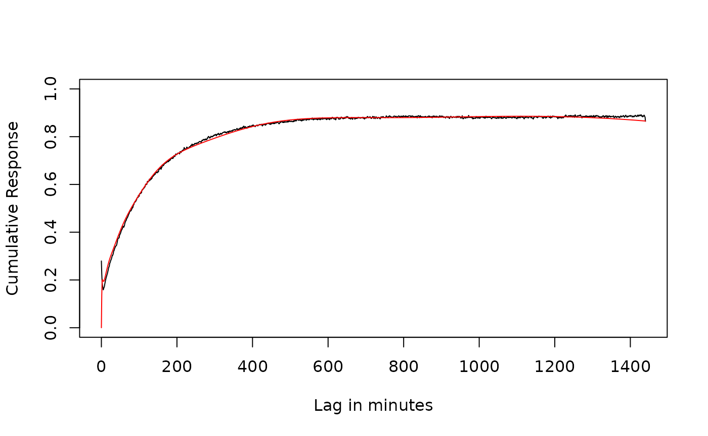
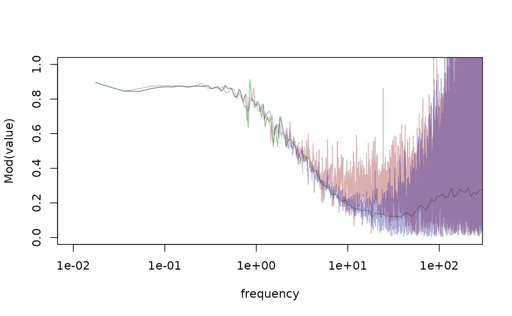
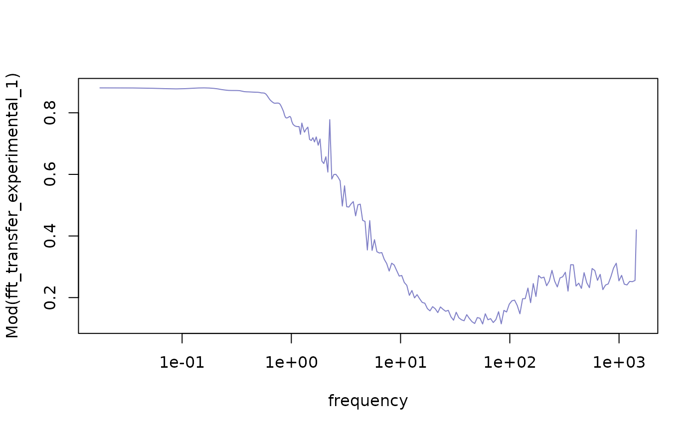
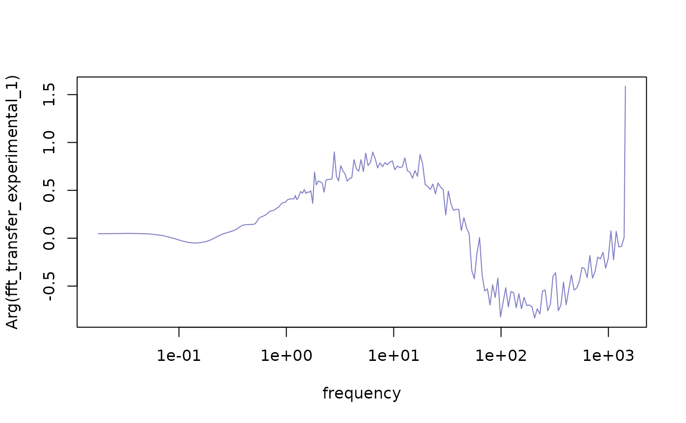

Barometric pressure steps
barometric_pressure.Rmd
# minute data
data(kennel_2020)Time domain
Single value
clarks <- recipe(wl~., kennel_2020) |>
step_baro_clark(wl,
baro,
lag_space = 1) |> # 1 minutes (every minute differences)
step_baro_clark(wl,
baro,
lag_space = 60) |> # 60 minutes (hourly differences)
step_baro_clark(wl,
baro,
lag_space = 1440) |> # 1440 minutes (daily differences)
prep() |>
bake()
# The barometric efficiency is stored in the step (warning: this may change)
clarks$get_step_data("barometric_efficiency")
#> $baro_clark_UUEdL
#> [1] 0.1941766
#>
#> $baro_clark_ieexo
#> [1] 0.4738098
#>
#> $baro_clark_mb92Q
#> [1] 0.8453437
least_squares <- recipe(wl~., kennel_2020) |>
step_baro_least_squares(wl, baro) |>
step_baro_least_squares(wl, baro,
lag_space = 1440,
differences = TRUE) |> # 1440 minutes (daily differences)
prep() |>
bake()
least_squares$get_step_data("barometric_efficiency")
#> $baro_least_squares_8HfdV
#> [1] 0.8273019
#>
#> $baro_least_squares_HIyvQ
#> [1] 0.8410913Response function
Standard lag method
lag_standard <- recipe(wl~., kennel_2020) |>
step_lead_lag(baro, lag = 0:1440) |>
step_spline_b(datetime, df = 11, intercept = TRUE) |>
step_drop_columns(c(baro, datetime, et)) |>
step_ols(wl~.) |>
prep() |>
bake()
resp_l <- lag_standard$get_response_data()Distributed lag method
lag_standard <- recipe(wl~., kennel_2020) |>
step_distributed_lag(baro, knots = log_lags_arma(15, 1440)) |>
step_spline_b(datetime, df = 11, intercept = TRUE) |>
step_drop_columns(c(baro, datetime, et)) |>
step_ols(wl~.) |>
prep() |>
bake()
resp_dl <- lag_standard$get_response_data()
plot(value~x, resp_l[resp_l$term == "lead_lag" & resp_l$variable == "cumulative", ],
type = "l", ylim = c(0, 1),
xlab = "Lag in minutes",
ylab = "Cumulative Response"
)
points(value~x, resp_dl[resp_dl$term == "distributed_lag_interpolated" & resp_dl$variable == "cumulative", ],
type = "l", col = "red")
Frequency domain
Single value
These methods are based on the 2 cpd frequency which may not be indicative of the static barometric efficiency, in cases with a frequency dependent response (large wellbore storage or non-confined conditions).
data(kennel_2020)
harmonic <- recipe(wl~., kennel_2020) |>
step_baro_harmonic(datetime, wl, baro, et) |>
prep() |>
bake()
harmonic$get_step_data("barometric_efficiency")
#> $baro_harmonic_l1OPb
#> $baro_harmonic_l1OPb$ratio
#> [1] 0.5725228
#>
#> $baro_harmonic_l1OPb$acworth
#> [1] 0.5940213
#>
#> $baro_harmonic_l1OPb$rau
#> [1] 0.6108032
#>
#> $baro_harmonic_l1OPb$tf
#> [1] 0.5844761Transfer function
Three methods:
- pgram based
- assumes smooth periodogram
- Welch’s
- loss of low frequency information
- Experimental
- assumes smooth periodogram
- smoothing across multiple frequencies
- many higher frequecies discarded
- should be very fast
form <- as.formula("wl~.")
pgram <- recipe(form, kennel_2020) |>
step_fft_transfer_pgram(c(wl, baro, et), spans = c(3, 5, 7), taper = 0.4,
time_step = 60) |>
prep() |>
bake()
pg <- as.data.frame(pgram$get_step_data("fft_result")[[1]])
welch <- recipe(form, kennel_2020) |>
step_fft_transfer_welch(c(wl, baro, et),
length_subset = 40000,
overlap = 0.97,
window = window_nuttall(40000),
time_step = 60) |>
prep() |>
bake()
we <- as.data.frame(welch$get_step_data("fft_result")[[1]])
form <- as.formula("wl~.")
pgram_experimental <- recipe(form, kennel_2020) |>
step_fft_transfer_experimental(c(wl, baro, et),
spans = c(3, 5, 7),
taper = 0.45,
# power = 3,
n_groups = 201,
time_step = 60) |>
prep() |>
bake()
experimental <- as.data.frame(pgram_experimental$get_step_data("fft_result")[[1]])
plot(Mod(fft_transfer_pgram_1)~frequency, pg, type = "l", log = "x", xlim = c(0.01, 100),
col = "#00900080")
#> Warning in xy.coords(x, y, xlabel, ylabel, log): 1 x value <= 0 omitted from
#> logarithmic plot
points(Mod(transfer_welch_1)~frequency, we, type = "l",
col = "#90000080")
points(Mod(fft_transfer_experimental_1)~frequency, experimental, type = "l",
col = "#00009080")
hydrorecipes:::group_frequency(we$frequency, 201)
#> [1] 0.000 0.036 0.072 0.108 0.144 0.180 0.216 0.252
#> [9] 0.288 0.324 0.360 0.396 0.432 0.468 0.504 0.540
#> [17] 0.576 0.612 0.648 0.684 0.720 0.756 0.792 0.828
#> [25] 0.864 0.900 0.936 0.972 1.008 1.044 1.080 1.116
#> [33] 1.152 1.188 1.224 1.260 1.296 1.332 1.368 1.404
#> [41] 1.440 1.476 1.512 1.548 1.584 1.620 1.656 1.692
#> [49] 1.728 1.764 1.800 1.836 1.872 1.908 1.944 1.980
#> [57] 2.016 2.052 2.088 2.124 2.160 2.196 2.250 2.322
#> [65] 2.394 2.466 2.538 2.610 2.682 2.754 2.826 2.898
#> [73] 2.970 3.060 3.168 3.276 3.384 3.492 3.600 3.726
#> [81] 3.870 4.014 4.158 4.302 4.464 4.644 4.824 5.022
#> [89] 5.238 5.454 5.670 5.904 6.156 6.408 6.678 6.984
#> [97] 7.308 7.632 7.974 8.334 8.712 9.108 9.522 9.972
#> [105] 10.458 10.962 11.484 12.042 12.618 13.230 13.878 14.562
#> [113] 15.282 16.038 16.848 17.694 18.576 19.512 20.502 21.546
#> [121] 22.644 23.814 25.038 26.316 27.684 29.124 30.636 32.238
#> [129] 33.930 35.694 37.566 39.546 41.616 43.812 46.134 48.564
#> [137] 51.120 53.838 56.700 59.706 62.892 66.240 69.768 73.494
#> [145] 77.418 81.558 85.932 90.540 95.382 100.494 105.894 111.600
#> [153] 117.612 123.930 130.590 137.628 145.044 152.856 161.118 169.812
#> [161] 178.974 188.658 198.828 209.538 220.842 232.758 245.322 258.570
#> [169] 272.538 287.262 302.796 319.176 336.456 354.690 373.914 394.164
#> [177] 415.530 438.066 461.826 486.882 513.288 541.152 570.528 601.488
#> [185] 634.158 668.610 704.934 743.238 783.612 826.182 871.074 918.414
#> [193] 968.346 1020.996 1076.508 1135.044 1196.766 1261.836 1330.452 1402.812
#> [201] 1439.964
plot(Mod(fft_transfer_experimental_1)~frequency, experimental, type = "l",
col = "#00009080", log = 'x')
#> Warning in xy.coords(x, y, xlabel, ylabel, log): 1 x value <= 0 omitted from
#> logarithmic plot
plot(Arg(fft_transfer_experimental_1)~frequency, experimental, type = "l",
col = "#00009080", log = 'x')
#> Warning in xy.coords(x, y, xlabel, ylabel, log): 1 x value <= 0 omitted from
#> logarithmic plot
References
sessionInfo()
#> R version 4.4.1 (2024-06-14)
#> Platform: x86_64-pc-linux-gnu
#> Running under: Ubuntu 22.04.4 LTS
#>
#> Matrix products: default
#> BLAS: /usr/lib/x86_64-linux-gnu/openblas-pthread/libblas.so.3
#> LAPACK: /usr/lib/x86_64-linux-gnu/openblas-pthread/libopenblasp-r0.3.20.so; LAPACK version 3.10.0
#>
#> locale:
#> [1] LC_CTYPE=C.UTF-8 LC_NUMERIC=C LC_TIME=C.UTF-8
#> [4] LC_COLLATE=C.UTF-8 LC_MONETARY=C.UTF-8 LC_MESSAGES=C.UTF-8
#> [7] LC_PAPER=C.UTF-8 LC_NAME=C LC_ADDRESS=C
#> [10] LC_TELEPHONE=C LC_MEASUREMENT=C.UTF-8 LC_IDENTIFICATION=C
#>
#> time zone: UTC
#> tzcode source: system (glibc)
#>
#> attached base packages:
#> [1] stats graphics grDevices utils datasets methods base
#>
#> other attached packages:
#> [1] hydrorecipes_0.0.6 Bessel_0.6-1
#>
#> loaded via a namespace (and not attached):
#> [1] cli_3.6.3 knitr_1.48 rlang_1.1.4 xfun_0.46
#> [5] highr_0.11 textshaping_0.4.0 data.table_1.15.4 jsonlite_1.8.8
#> [9] htmltools_0.5.8.1 earthtide_0.1.5 ragg_1.3.2 sass_0.4.9
#> [13] gmp_0.7-4 rmarkdown_2.27 evaluate_0.24.0 jquerylib_0.1.4
#> [17] fastmap_1.2.0 yaml_2.3.10 lifecycle_1.0.4 compiler_4.4.1
#> [21] fs_1.6.4 htmlwidgets_1.6.4 Rcpp_1.0.13 systemfonts_1.1.0
#> [25] digest_0.6.36 collapse_2.0.15 R6_2.5.1 parallel_4.4.1
#> [29] bslib_0.8.0 tools_4.4.1 Rmpfr_0.9-5 RcppThread_2.1.7
#> [33] pkgdown_2.1.0 cachem_1.1.0 desc_1.4.3